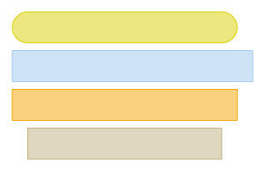
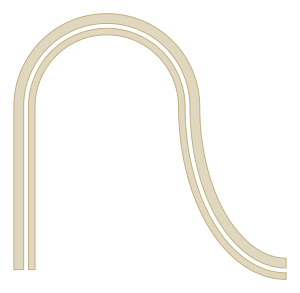
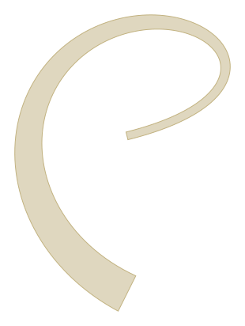
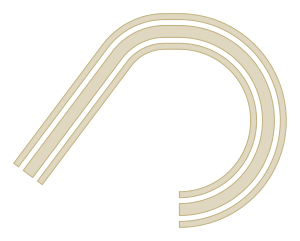
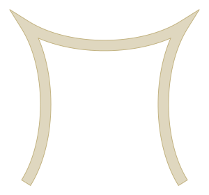
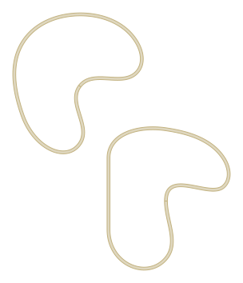
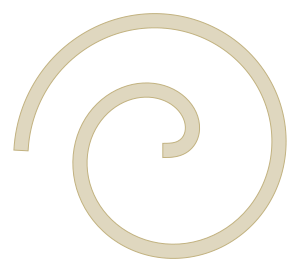
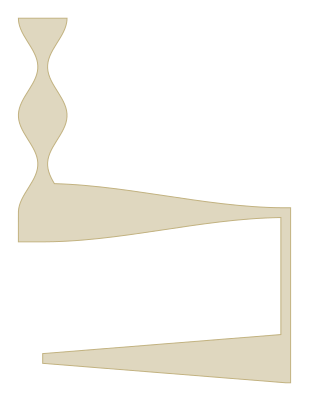

gdstk.RobustPath¶
-
class
gdstk.RobustPath(initial_point, width, offset=0, ends='flush', tolerance=0.01, max_evals=1000, gdsii_path=False, scale_width=True, layer=0, datatype=0)¶ Robust path creation.
RobusPath can be used to create single and multiple parallel paths with parametrized widths and offsets. End caps can be customized freely. Intersections between adjacent sections are numerically determined so that curved sections do not need to be joined smoothly.
- Parameters
initial_point (coordinate pair or complex) – Starting point of the path.
width (number or sequence) – Width of the paths. If this is a sequence, its length defines the number of paths created.
offset (number or sequence) – If this is a number, it is treated as the distance between centers of adjacent paths. If it is a sequence, each number represents the absolute offset from the center of the path.
ends – Definition for the end caps. One of “flush”, “extended”, “round”, “smooth”, a 2-tuple, or a callable. A 2-tuple defines the extension length on both ends of the path. A callable must accept 4 arguments (cap end point and direction for both path sides) and return a sequence of points that define the cap shape.
tolerance – Tolerance used for calculating the polygonal approximation of the paths.
max_evals – Maximal number of path evaluations per section. Used for intersection finding at joins and to create the polygonal approximation for each section.
gdsii_path – If
True, the paths will be stored as GDSII path elements. They require less memory, but do not support “smooth” or callable joins and end caps, or width changes along the path.scale_width – If
False, the path widths are not scaled when transforming this path.layer – GDSII layer number assigned to this path.
datatype – GDSII data type number assigned to this path.
Notes
If
widthis a number andoffseta sequence, the number of parallel paths is defined by the latter.Arguments
ends,layer, anddatatypecan also be lists with one definition for each path created.Examples
>>> fpath = gdstk.FlexPath((0, 0), 0.5, tolerance=1e-3) >>> fpath.arc(1, 0, numpy.pi/2) >>> fpath.arc(1, 0, -numpy.pi/2) >>> rpath = gdstk.RobustPath((3, 0), 0.5, tolerance=1e-3) >>> rpath.arc(1, 0, numpy.pi/2) >>> rpath.arc(1, 0, -numpy.pi/2)
>>> path = gdstk.RobustPath((0, 0), ... [0.8, 0.8, 0.8, 0.8], ... 1.0, ... ends=["flush", "extended", (0.4, 0.8), "round"], ... tolerance=1e-3, ... layer=[0, 1, 2, 3], ... ) >>> path.horizontal(5)
Methods
arc(radius, initial_angle, final_angle[, …])Append an elliptical arc to this path.
bezier(xy[, width, offset, relative])Append a Bézier curve to this path.
commands(path_commands…)Append sections to this path according to commands.
copy()Create a copy this robustpath.
cubic(xy[, width, offset, relative])Append a cubic Bézier curve to this path.
cubic_smooth(xy[, width, offset, relative])Append a smooth cubic Bézier curve to this path.
delete_property(attr)Delete property of this path.
get_property(attr)Return a property of this path.
gradient(u[, from_below])Calculate the gradient of this path.
horizontal(x[, width, offset, relative])Append a horizontal segment to this path.
interpolation(points[, angles, tension_in, …])Append a smooth interpolating curve through the given points.
mirror(p1[, p2])Mirror this path across the line through p1 and p2.
offsets(u[, from_below])Calculate the offset of this path.
parametric(path_function[, width, offset, …])Append a parametric curve to this path.
position(u[, from_below])Calculate the position of this path.
quadratic(xy[, width, offset, relative])Append a quadratic Bézier curve to this path.
quadratic_smooth(xy[, width, offset, relative])Append a smooth quadratic Bézier curve to this path.
rotate(angle[, center])Rotate this path.
scale(s[, center])Scale this path.
segment(xy[, width, offset, relative])Append a straight segment to this path.
set_datatypes(*datatypes)Sets the datatypes for all paths.
set_layers(*layers)Sets the layers for all paths.
set_property(attr, value)Set a GDSII property for this path.
spine()Central path spine.
Calculate the polygonal representations of this path.
translate(dx, dy)Translate this path.
turn(radius, angle[, width, offset])Append a circular turn to this path.
vertical(y[, width, offset, relative])Append a vertical segment to this path.
widths(u[, from_below])Calculate the width of this path.
Attributes
RobustPath data type.
RobustPath layer.
Number of paths.
Number of sections in this path.
-
arc(radius, initial_angle, final_angle, rotation=0, width=None, offset=None) → self¶ Append an elliptical arc to this path.
- Parameters
radius (number or sequence[2]) – Circular arc radius or elliptical arc radii.
initial_angle – Starting angle (in radians).
final_angle – Ending angle (in radians).
rotation – Arc rotation.
width (number, tuple, or callable) – Width of this section. A tuple of 2 elements (number, str) can be used to define the width value and the interpolation type from the previous section to the end point (“constant”, “linear”, or “smooth”). I only a number is used, the interpolation defaults to “linear”. A callable must accept a single number from 0 to 1 and return the desired width at the corresponding position along the section.
offset (number, tuple, or callable) – Offset from the central path position. A tuple or callable can be used as in
width.
Examples
>>> path = gdstk.FlexPath((0, 0), [0.2, 0.3], 0.4, tolerance=1e-3) >>> path.vertical(5) >>> path.arc(2.5, numpy.pi, 0) >>> path.arc((3, 5), -numpy.pi, -numpy.pi / 2)
-
bezier(xy, width=None, offset=None, relative=False) → self¶ Append a Bézier curve to this path.
- Parameters
xy (sequence of points) – Control points for the Bézier. Each point can be a coordinate pair or a complex.
width (number, tuple, or callable) – Width of this section. A tuple of 2 elements (number, str) can be used to define the width value and the interpolation type from the previous section to the end point (“constant”, “linear”, or “smooth”). I only a number is used, the interpolation defaults to “linear”. A callable must accept a single number from 0 to 1 and return the desired width at the corresponding position along the section.
offset (number, tuple, or callable) – Offset from the central path position. A tuple or callable can be used as in
width.relative – If
True, coordinates are relative to the last point.
Notes
Arguments
widthandoffsetcan also be lists with one definition for each path.If
offsetis a single number or tuple, it is treated as the distance between adjacent paths.Examples
>>> path = gdstk.RobustPath((0, 0), 0.2, tolerance=1e-3) >>> path.bezier( ... [(4, 1), (4, 3), (0, 5), (-4, 3), (-4, -2), (0, -4)], ... width=lambda u: 0.2 + 0.8 * u ** 2, ... )
See also
-
commands(path_commands...) → self¶ Append sections to this path according to commands.
Commands are single characters followed by a pre-defined number of numerical arguments, according to the table below:
Command
Primitive
Arguments
L/l
Line segment
x, y
H/h
Horizontal segment
x
V/v
Vertical segment
y
C/c
Cubic Bézier
x0, y0, x1, y1, x2, y2
S/s
Smooth cubic Bézier
x0, y0, x1, y1
Q/q
Quadratic Bézier
x0, y0, x1, y1
T/t
Smooth quadratic Bézier
x, y
a
Circular turn
rad, ang
A
Circular arc
rad, ang0, ang1
E
Elliptical arc
rad0, rad1, ang0, ang1, rot
Uppercase commands assume that coordinates are absolute, whereas the lowercase versions assume they are relative to the previous endpoint.
Notes
The meaning and order of the arguments of all commands are identical to the corresponding method.
Examples
>>> path = gdstk.RobustPath((0, 0), [0.2, 0.4, 0.2], 0.5, ... tolerance=1e-3) >>> path.commands("l", 3, 4, ... "A", 2, numpy.arctan2(3, -4), numpy.pi / 2, ... "h", 0.5, ... "a", 3, -numpy.pi)
-
copy() → gdstk.RobustPath¶ Create a copy this robustpath.
- Returns
Copy of this robustpath.
-
cubic(xy, width=None, offset=None, relative=False) → self¶ Append a cubic Bézier curve to this path.
- Parameters
xy (sequence of 3 points) – Control points and end point for the Bézier. Each point can be a coordinate pair or a complex.
width (number, tuple, or callable) – Width of this section. A tuple of 2 elements (number, str) can be used to define the width value and the interpolation type from the previous section to the end point (“constant”, “linear”, or “smooth”). I only a number is used, the interpolation defaults to “linear”. A callable must accept a single number from 0 to 1 and return the desired width at the corresponding position along the section.
offset (number, tuple, or callable) – Offset from the central path position. A tuple or callable can be used as in
width.relative – If
True, coordinates are relative to the last point.
Notes
Arguments
widthandoffsetcan also be lists with one definition for each path.If
offsetis a single number or tuple, it is treated as the distance between adjacent paths.Examples
>>> path = gdstk.RobustPath((0, 0), 0.2, tolerance=1e-3) >>> path.cubic([(0.5, 0.8), (0.5, 2.2), (0, 3)]) >>> path.cubic([(0.8, -0.5), (2.2, -0.5), (3, 0)], relative=True) >>> path.cubic([(-0.5, -0.8), (-0.5, -2.2), (0, -3)], relative=True)
See also
-
cubic_smooth(xy, width=None, offset=None, relative=False) → self¶ Append a smooth cubic Bézier curve to this path.
The first control point of the Bézier is such that the gradient of the path is continuous.
- Parameters
xy (sequence of 2 points) – Second control point and end point for the Bézier. Each can be a coordinate pair or a complex.
width (number, tuple, or callable) – Width of this section. A tuple of 2 elements (number, str) can be used to define the width value and the interpolation type from the previous section to the end point (“constant”, “linear”, or “smooth”). I only a number is used, the interpolation defaults to “linear”. A callable must accept a single number from 0 to 1 and return the desired width at the corresponding position along the section.
offset (number, tuple, or callable) – Offset from the central path position. A tuple or callable can be used as in
width.relative – If
True, coordinates are relative to the last point.
Notes
Arguments
widthandoffsetcan also be lists with one definition for each path.If
offsetis a single number or tuple, it is treated as the distance between adjacent paths.Examples
>>> path = gdstk.RobustPath((0, 0), 0.2, tolerance=1e-3) >>> path.cubic([(0.5, 0.8), (0.5, 2.2), (0, 3)]) >>> path.cubic_smooth([(3.5, 0.8), (3, 0)], relative=True) >>> path.cubic_smooth([(-0.5, -2.2), (0, -3)], relative=True)

-
datatypes¶ RobustPath data type.
Notes
This attribute is read-only.
-
delete_property(attr) → self¶ Delete property of this path.
- Parameters
attr (number) – Property number.
-
get_property(attr) → str¶ Return a property of this path.
- Parameters
attr (number) – Property number.
- Returns
Property value. If the property number does not exist,
Noneis returned.- Return type
str or None
-
gradient(u, from_below=True) → numpy.ndarray¶ Calculate the gradient of this path.
- Parameters
u (number) – Where in the path to calculate the position. The value must be in the range 0 thru
gdstk.RobustPath.size, inclusive.from_below – If there is a discontinuity at
u, use the value approaching from below.
- Returns
The spine gradient of the path at
u.
-
horizontal(x, width=None, offset=None, relative=False) → self¶ Append a horizontal segment to this path.
- Parameters
x (number) – End point x coordinate.
width (number, tuple, or callable) – Width of this section. A tuple of 2 elements (number, str) can be used to define the width value and the interpolation type from the previous section to the end point (“constant”, “linear”, or “smooth”). I only a number is used, the interpolation defaults to “linear”. A callable must accept a single number from 0 to 1 and return the desired width at the corresponding position along the section.
offset (number, tuple, or callable) – Offset from the central path position. A tuple or callable can be used as in
width.relative – If
True, coordinates are relative to the last point.
Notes
Arguments
widthandoffsetcan also be lists with one definition for each path.If
offsetis a single number or tuple, it is treated as the distance between adjacent paths.See also
-
interpolation(points, angles=None, tension_in=1, tension_out=1, initial_curl=1, final_curl=1, cycle=False, width=None, offset=None, relative=True) → self¶ Append a smooth interpolating curve through the given points.
Use the Hobby algorithm 1 to calculate a smooth interpolating path made of cubic Bezier segments between each pair of points. Angle and tension parameters can be specified at each point, and the path can be open or closed.
- Parameters
points (sequence[N] of points) – Vertices in the interpolating path.
angles (
Noneor sequence[N + 1]) – Tangent angles at each point (in radians). Angles defined asNoneare automatically calculated.tension_in (number or sequence[N + 1]) – Tension parameter when arriving at each point. One value per point or a single value used for all points.
tension_out (number or sequence[N + 1]) – Tension parameter when leaving each point. One value per point or a single value used for all points.
initial_curl – Ratio between the mock curvatures at the first point and at its neighbor. A value of 1 renders the first segment a good approximation for a circular arc. A value of 0 will better approximate a straight segment. It has no effect for closed paths or when an angle is defined for the first point.
final_curl – Ratio between the mock curvatures at the last point and at its neighbor. It has no effect for closed paths or when an angle is defined for the first point.
cycle – If
True, calculates control points for a closed path, with an additional segment connecting the first and last points.width (number, tuple, or callable) – Width of this section. A tuple of 2 elements (number, str) can be used to define the width value and the interpolation type from the previous section to the end point (“constant”, “linear”, or “smooth”). I only a number is used, the interpolation defaults to “linear”. A callable must accept a single number from 0 to 1 and return the desired width at the corresponding position along the section.
offset (number, tuple, or callable) – Offset from the central path position. A tuple or callable can be used as in
width.relative – If
True, coordinates are relative to the last point.
Examples
>>> half_pi = numpy.pi / 2 >>> points = [(4, 1), (4, 3), (0, 5), (-4, 3), (-4, -2), (0, -4)] >>> angles = [half_pi, None, None, None, -half_pi, -half_pi, None] >>> path_1 = gdstk.RobustPath((0, 0), 0.2, tolerance=1e-3) >>> path_1.interpolation(points, cycle=True) >>> path_2 = gdstk.RobustPath((6, -8), 0.2, tolerance=1e-3) >>> path_2.interpolation(points, angles, cycle=True, relative=True)
See also
- 1
Hobby, J.D. “Smooth, easy to compute interpolating splines.” Discrete Comput Geom 1, 123–140 (1986). DOI: 10.1007/BF02187690.
-
layers¶ RobustPath layer.
Notes
This attribute is read-only.
-
mirror(p1, p2=0, 0) → self¶ Mirror this path across the line through p1 and p2.
- Parameters
p1 (coordinate pair or complex) – First point in the mirror line.
p2 (coordinate pair or complex) – Second point in the mirror line.
-
num_paths¶ Number of paths.
Notes
This attribute is read-only.
-
offsets(u, from_below=True) → numpy.ndarray¶ Calculate the offset of this path.
- Parameters
u (number) – Where in the path to calculate the width. The value must be in the range 0 thru
gdstk.RobustPath.size, inclusive.from_below – If there is a discontinuity at
u, use the value approaching from below.
- Returns
The offsets of each path at
u.
-
parametric(path_function, width=None, offset=None, relative=True) → self¶ Append a parametric curve to this path.
- Parameters
path_function (callable) – Function that defines the path. Must be a function of one argument (that varies from 0 to 1) that returns a 2-element sequence or complex with the coordinates of the path.
width (number or sequence) – Width at the end point(s). If this is a sequence, it must define the width for each path. The width is linearly tapered from its previous value.
offset (number or sequence) – If this is a number, it is treated as the distance between centers of adjacent paths. If it is a sequence, each number represents the absolute offset from the center of the path. The offsets are linearly tapered from their previous values.
relative – If
True, the return values ofpath_functionare used as offsets from the current path position, i.e., to ensure a continuous path,path_function(0)must be (0, 0). Otherwise, they are used as absolute coordinates.
Examples
>>> def spiral(u): ... rad = 2 * u ** 0.5 ... ang = 3 * numpy.pi * u ... return (rad * numpy.cos(ang), rad * numpy.sin(ang)) >>> path = gdstk.FlexPath((0, 0), 0.2, tolerance=1e-3) >>> path.parametric(spiral)
-
position(u, from_below=True) → numpy.ndarray¶ Calculate the position of this path.
- Parameters
u (number) – Where in the path to calculate the position. The value must be in the range 0 thru
gdstk.RobustPath.size, inclusive.from_below – If there is a discontinuity at
u, use the value approaching from below.
- Returns
The spine position of the path at
u.
-
quadratic(xy, width=None, offset=None, relative=False) → self¶ Append a quadratic Bézier curve to this path.
- Parameters
xy (sequence of 2 points) – Control point and end point for the Bézier. Each point can be a coordinate pair or a complex.
width (number, tuple, or callable) – Width of this section. A tuple of 2 elements (number, str) can be used to define the width value and the interpolation type from the previous section to the end point (“constant”, “linear”, or “smooth”). I only a number is used, the interpolation defaults to “linear”. A callable must accept a single number from 0 to 1 and return the desired width at the corresponding position along the section.
offset (number, tuple, or callable) – Offset from the central path position. A tuple or callable can be used as in
width.relative – If
True, coordinates are relative to the last point.
Notes
Arguments
widthandoffsetcan also be lists with one definition for each path.If
offsetis a single number or tuple, it is treated as the distance between adjacent paths.
-
quadratic_smooth(xy, width=None, offset=None, relative=False) → self¶ Append a smooth quadratic Bézier curve to this path.
The control point of the Bézier is such that the gradient of the path is continuous.
- Parameters
xy (coordinate pair or complex) – End point for the Bézier.
width (number, tuple, or callable) – Width of this section. A tuple of 2 elements (number, str) can be used to define the width value and the interpolation type from the previous section to the end point (“constant”, “linear”, or “smooth”). I only a number is used, the interpolation defaults to “linear”. A callable must accept a single number from 0 to 1 and return the desired width at the corresponding position along the section.
offset (number, tuple, or callable) – Offset from the central path position. A tuple or callable can be used as in
width.relative – If
True, coordinates are relative to the last point.
Notes
Arguments
widthandoffsetcan also be lists with one definition for each path.If
offsetis a single number or tuple, it is treated as the distance between adjacent paths.
-
rotate(angle, center=0, 0) → self¶ Rotate this path.
- Parameters
angle – Rotation angle (in radians).
center (coordinate pair or complex) – Center of the transformation.
-
scale(s, center=0, 0) → self¶ Scale this path.
- Parameters
s – Scaling factor.
center (coordinate pair or complex) – Center of the transformation.
-
segment(xy, width=None, offset=None, relative=False) → self¶ Append a straight segment to this path.
- Parameters
xy (coordinate pair or complex) – Segment end point.
width (number, tuple, or callable) – Width of this section. A tuple of 2 elements (number, str) can be used to define the width value and the interpolation type from the previous section to the end point (“constant”, “linear”, or “smooth”). I only a number is used, the interpolation defaults to “linear”. A callable must accept a single number from 0 to 1 and return the desired width at the corresponding position along the section.
offset (number, tuple, or callable) – Offset from the central path position. A tuple or callable can be used as in
width.relative – If
True, coordinates are relative to the last point.
Notes
Arguments
widthandoffsetcan also be lists with one definition for each path.If
offsetis a single number or tuple, it is treated as the distance between adjacent paths.Examples
>>> path = gdstk.RobustPath((0, 0), 0.2, tolerance=1e-3) >>> path.segment((5, 0), 1.0) >>> path.segment((5, 3), (0.2, "constant")) >>> path.segment((0, 3), (1.2, "smooth")) >>> path.segment( ... (0, 7), ... lambda u: 0.2 + 0.8 * numpy.cos(2 * numpy.pi * u) ** 2 ... )
>>> path = gdstk.RobustPath((0, 0), [0.2, 0.2], 0.3, tolerance=1e-3) >>> path.segment((5, 0), offset=0.8) >>> path.segment((5, 3), offset=(0.3, "constant")) >>> path.segment((0, 3), offset=(1.0, "smooth")) >>> path.segment((0, 7), offset=[ ... lambda u: -0.2 - 0.8 * numpy.cos(2 * numpy.pi * u) ** 2, ... lambda u: 0.2 + 0.8 * numpy.cos(2 * numpy.pi * u) ** 2 ... ])

-
set_datatypes(*datatypes) → self¶ Sets the datatypes for all paths.
- Parameters
datatypes – GDSII data type numbers for all paths.
-
set_layers(*layers) → self¶ Sets the layers for all paths.
- Parameters
layers – GDSII layer numbers for all paths.
-
set_property(attr, value) → self¶ Set a GDSII property for this path.
- Parameters
attr (number) – Property number.
value (str) – Property value.
-
size¶ Number of sections in this path.
Notes
This attribute is read-only.
-
spine() → numpy.ndarray¶ Central path spine.
- Returns
Copy of the points that make up the path at zero offset.
-
to_polygons() → list¶ Calculate the polygonal representations of this path.
- Returns
The polygonal contours defined by this path.
-
translate(dx, dy) → self¶ Translate this path.
- Parameters
dx – Translation in the x coordinate.
dy – Translation in the y coordinate.
-
turn(radius, angle, width=None, offset=None) → self¶ Append a circular turn to this path.
- Parameters
radius – Circular arc radius.
angle – Turning angle. Positive values turn counter clockwise and negative values, clockwise.
width (number or sequence) – Width at the end point(s). If this is a sequence, it must define the width for each path. The width is linearly tapered from its previous value.
offset (number or sequence) – If this is a number, it is treated as the distance between centers of adjacent paths. If it is a sequence, each number represents the absolute offset from the center of the path. The offsets are linearly tapered from their previous values.
-
vertical(y, width=None, offset=None, relative=False) → self¶ Append a vertical segment to this path.
- Parameters
y (number) – End point x coordinate.
width (number, tuple, or callable) – Width of this section. A tuple of 2 elements (number, str) can be used to define the width value and the interpolation type from the previous section to the end point (“constant”, “linear”, or “smooth”). I only a number is used, the interpolation defaults to “linear”. A callable must accept a single number from 0 to 1 and return the desired width at the corresponding position along the section.
offset (number, tuple, or callable) – Offset from the central path position. A tuple or callable can be used as in
width.relative – If
True, coordinates are relative to the last point.
Notes
Arguments
widthandoffsetcan also be lists with one definition for each path.If
offsetis a single number or tuple, it is treated as the distance between adjacent paths.See also
-
widths(u, from_below=True) → numpy.ndarray¶ Calculate the width of this path.
- Parameters
u (number) – Where in the path to calculate the width. The value must be in the range 0 thru
gdstk.RobustPath.size, inclusive.from_below – If there is a discontinuity at
u, use the value approaching from below.
- Returns
The widths of each path at
u.